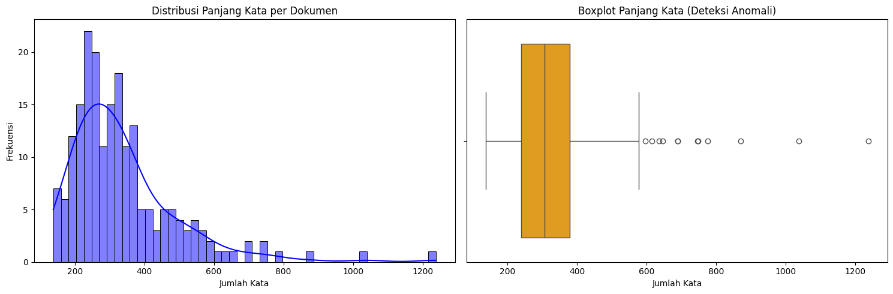
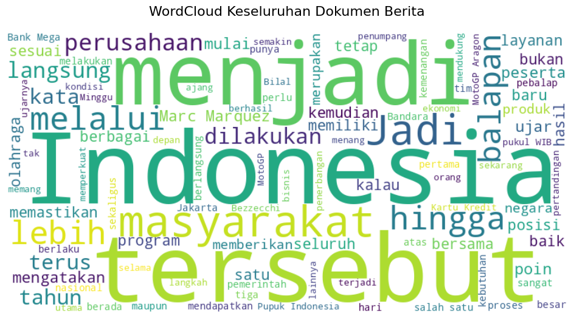
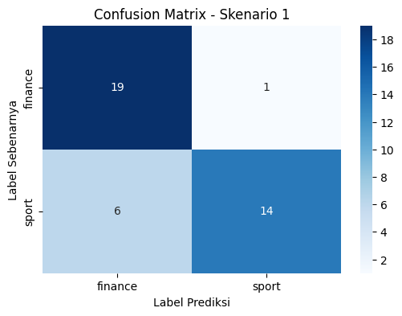
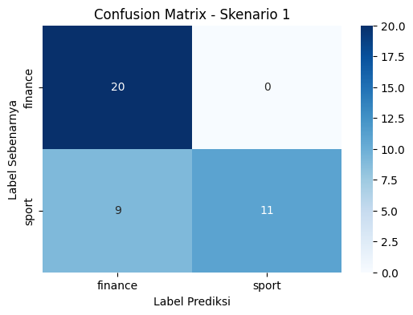

Penerapan Word2Vec pada Data Teks Bahasa Indonesia#
Notebook ini menjelaskan bagaimana teks berita diubah menjadi representasi numerik menggunakan Word2Vec, khususnya arsitektur Skip-gram. Pembahasan dimulai dari contoh kecil agar konsep target dan konteks mudah diamati, kemudian dilanjutkan dengan penerapan pada data berita hasil scraping dari kategori sport dan finance.
Alur notebook terdiri dari dua bagian utama:
Contoh konsep: membentuk pasangan kata target-konteks, melatih Word2Vec sederhana, dan melihat vektor kata.
Penerapan pada data nyata: memahami dataset, melakukan preprocessing, melatih Skip-gram, mengubah vektor kata menjadi vektor dokumen, lalu menguji klasifikasi dengan Gaussian Naive Bayes.
Word2Vec berbeda dari representasi seperti Bag of Words atau TF-IDF. Bag of Words dan TF-IDF terutama mencatat kemunculan atau bobot kata, sedangkan Word2Vec mempelajari representasi kata dari hubungan kata tersebut dengan kata-kata di sekitarnya. Kata yang digunakan dalam konteks yang mirip diharapkan memiliki vektor yang berdekatan.
from gensim.models import Word2Vec
kalimat = [
["pemerintah", "menaikkan", "harga", "saham", "pasar", "keuangan"],
["investor", "membeli", "saham", "perusahaan", "teknologi", "pasar"],
["atlet", "meraih", "medali", "emas", "dalam", "kompetisi", "olahraga"]
]
# 2. Atur parameter yang ingin Anda uji coba
n_vector = 10 # Dimensi vektor (bebas diganti, misal: 5, 10, 50, 100)
window_size = 5 # Ukuran window konteks (bebas diganti, misal: 1, 2, 3)
Memahami Data Contoh dan Parameter#
Data kalimat berupa daftar kalimat yang sudah ditokenisasi: setiap kalimat adalah list kata, sehingga batas antarkalimat tetap diketahui oleh Gensim. Contohnya, dua kalimat pertama membahas pasar dan saham, sedangkan kalimat ketiga berisi konteks olahraga.
vector_size menentukan banyaknya angka pada vektor setiap kata. Pada contoh ini nilainya 10, jadi sebuah kata direpresentasikan oleh 10 angka yang dipelajari model. window menentukan seberapa jauh kata di kiri dan kanan menjadi konteks bagi kata target. Dengan window_size=5 dan kalimat contoh yang hanya berisi 6 atau 7 kata, hampir semua kata lain dalam kalimat menjadi konteks. Ini memudahkan ilustrasi, tetapi korpus sekecil ini belum cukup untuk menghasilkan embedding yang kuat atau stabil.
# 3. Membuat dan melatih model Skip-gram (sg=1)
model_skipgram = Word2Vec(
sentences=kalimat,
vector_size=n_vector,
window=window_size,
sg=1, # sg=1 untuk Skip-gram (sg=0 untuk CBOW)
min_count=1, # min_count=1 agar semua kata ikut dihitung
workers=1,
seed=42
)
Cara Kerja Word2Vec Skip-gram#
Word2Vec belajar membuat vektor kata dengan menggunakan konteks di sekitarnya sebagai sinyal pembelajaran. Pada Skip-gram, satu kata target digunakan untuk memprediksi kata-kata konteksnya. Secara intuitif, model berusaha memperbesar peluang kata konteks yang benar muncul di sekitar target.
Jika w adalah kata target dan c adalah kata konteks, bentuk softmax sederhananya dapat ditulis:
V adalah vocabulary, v_w vektor target, dan u_c vektor konteks. Pelatihan menyesuaikan vektor agar konteks yang benar lebih mudah diprediksi. Implementasi praktis Gensim menggunakan strategi training yang efisien; persamaan ini membantu menjelaskan tujuannya, bukan langkah hitung literal untuk setiap parameter.
Pada pemanggilan Word2Vec, sg=1 memilih Skip-gram, min_count=1 mempertahankan semua kata pada contoh, dan seed mengatur inisialisasi acak agar percobaan lebih mudah diulang. Dengan data yang sangat sedikit, vektor hanya contoh hasil belajar dan belum merepresentasikan makna bahasa secara andal.
def ekstrak_kombinasi_skipgram(kalimat_list, window_size):
pasangan_kombinasi = []
for kalimat in kalimat_list:
panjang_kalimat = len(kalimat)
for i, kata_target in enumerate(kalimat):
# Tentukan jangkauan jendela di kiri dan kanan
awal = max(0, i - window_size)
akhir = min(panjang_kalimat, i + window_size + 1)
for j in range(awal, akhir):
if i != j: # Abaikan jika indeksnya sama dengan kata target
kata_konteks = kalimat[j]
pasangan_kombinasi.append((kata_target, kata_konteks))
return pasangan_kombinasi
Membentuk Pasangan Target dan Konteks#
Fungsi ekstrak_kombinasi_skipgram membuat ilustrasi pasangan dengan mengunjungi setiap posisi kata sebagai target, lalu mengambil kata lain dalam rentang window sebagai konteks. max dan min menjaga batas window agar tidak melewati awal atau akhir kalimat, sedangkan syarat i != j mencegah kata menjadi konteks dirinya sendiri.
Pasangan bersifat berarah: (saham, pasar) berarti saham sebagai target dan pasar sebagai konteks; pasangan arah sebaliknya dibuat ketika posisi pasar dikunjungi. Setelah itu, set menghapus pasangan yang sama untuk menampilkan daftar unik. Langkah penghapusan duplikat ini hanya untuk ringkasan contoh. Dalam training, jumlah kemunculan dan konteks yang terbentuk dari korpus tetap menjadi sinyal belajar, bukan sekadar daftar pasangan unik.
Dengan window 5 pada kalimat-kalimat pendek di atas, sebagian besar kata lain dalam kalimat masuk sebagai konteks. Pada korpus berita, ukuran window lebih kecil atau lebih besar akan mengubah jenis hubungan lokal yang dipelajari model.
# 1. Ekstrak seluruh pasangan berdasarkan window_size
semua_pasangan = ekstrak_kombinasi_skipgram(kalimat, window_size=window_size)
# 2. Ambil hanya kombinasi pasangan yang UNIK (menghilangkan duplikat)
kombinasi_unik = sorted(list(set(semua_pasangan)))
# 3. Tampilkan Hasil
print(f"=== IDENTIFIKASI KOMBINASI KATA (window={window_size}) ===")
print(f"Total pasangan terbentuk : {len(semua_pasangan)}")
print(f"Total pasangan KATA UNIK : {len(kombinasi_unik)}\n")
print("Daftar Kombinasi Kata Unik (Target -> Konteks):")
for target, konteks in kombinasi_unik:
print(f"Target: '{target}' --> Konteks: '{konteks}'")
=== IDENTIFIKASI KOMBINASI KATA (window=5) ===
Total pasangan terbentuk : 100
Total pasangan KATA UNIK : 98
Daftar Kombinasi Kata Unik (Target -> Konteks):
Target: 'atlet' --> Konteks: 'dalam'
Target: 'atlet' --> Konteks: 'emas'
Target: 'atlet' --> Konteks: 'kompetisi'
Target: 'atlet' --> Konteks: 'medali'
Target: 'atlet' --> Konteks: 'meraih'
Target: 'dalam' --> Konteks: 'atlet'
Target: 'dalam' --> Konteks: 'emas'
Target: 'dalam' --> Konteks: 'kompetisi'
Target: 'dalam' --> Konteks: 'medali'
Target: 'dalam' --> Konteks: 'meraih'
Target: 'dalam' --> Konteks: 'olahraga'
Target: 'emas' --> Konteks: 'atlet'
Target: 'emas' --> Konteks: 'dalam'
Target: 'emas' --> Konteks: 'kompetisi'
Target: 'emas' --> Konteks: 'medali'
Target: 'emas' --> Konteks: 'meraih'
Target: 'emas' --> Konteks: 'olahraga'
Target: 'harga' --> Konteks: 'keuangan'
Target: 'harga' --> Konteks: 'menaikkan'
Target: 'harga' --> Konteks: 'pasar'
Target: 'harga' --> Konteks: 'pemerintah'
Target: 'harga' --> Konteks: 'saham'
Target: 'investor' --> Konteks: 'membeli'
Target: 'investor' --> Konteks: 'pasar'
Target: 'investor' --> Konteks: 'perusahaan'
Target: 'investor' --> Konteks: 'saham'
Target: 'investor' --> Konteks: 'teknologi'
Target: 'keuangan' --> Konteks: 'harga'
Target: 'keuangan' --> Konteks: 'menaikkan'
Target: 'keuangan' --> Konteks: 'pasar'
Target: 'keuangan' --> Konteks: 'pemerintah'
Target: 'keuangan' --> Konteks: 'saham'
Target: 'kompetisi' --> Konteks: 'atlet'
Target: 'kompetisi' --> Konteks: 'dalam'
Target: 'kompetisi' --> Konteks: 'emas'
Target: 'kompetisi' --> Konteks: 'medali'
Target: 'kompetisi' --> Konteks: 'meraih'
Target: 'kompetisi' --> Konteks: 'olahraga'
Target: 'medali' --> Konteks: 'atlet'
Target: 'medali' --> Konteks: 'dalam'
Target: 'medali' --> Konteks: 'emas'
Target: 'medali' --> Konteks: 'kompetisi'
Target: 'medali' --> Konteks: 'meraih'
Target: 'medali' --> Konteks: 'olahraga'
Target: 'membeli' --> Konteks: 'investor'
Target: 'membeli' --> Konteks: 'pasar'
Target: 'membeli' --> Konteks: 'perusahaan'
Target: 'membeli' --> Konteks: 'saham'
Target: 'membeli' --> Konteks: 'teknologi'
Target: 'menaikkan' --> Konteks: 'harga'
Target: 'menaikkan' --> Konteks: 'keuangan'
Target: 'menaikkan' --> Konteks: 'pasar'
Target: 'menaikkan' --> Konteks: 'pemerintah'
Target: 'menaikkan' --> Konteks: 'saham'
Target: 'meraih' --> Konteks: 'atlet'
Target: 'meraih' --> Konteks: 'dalam'
Target: 'meraih' --> Konteks: 'emas'
Target: 'meraih' --> Konteks: 'kompetisi'
Target: 'meraih' --> Konteks: 'medali'
Target: 'meraih' --> Konteks: 'olahraga'
Target: 'olahraga' --> Konteks: 'dalam'
Target: 'olahraga' --> Konteks: 'emas'
Target: 'olahraga' --> Konteks: 'kompetisi'
Target: 'olahraga' --> Konteks: 'medali'
Target: 'olahraga' --> Konteks: 'meraih'
Target: 'pasar' --> Konteks: 'harga'
Target: 'pasar' --> Konteks: 'investor'
Target: 'pasar' --> Konteks: 'keuangan'
Target: 'pasar' --> Konteks: 'membeli'
Target: 'pasar' --> Konteks: 'menaikkan'
Target: 'pasar' --> Konteks: 'pemerintah'
Target: 'pasar' --> Konteks: 'perusahaan'
Target: 'pasar' --> Konteks: 'saham'
Target: 'pasar' --> Konteks: 'teknologi'
Target: 'pemerintah' --> Konteks: 'harga'
Target: 'pemerintah' --> Konteks: 'keuangan'
Target: 'pemerintah' --> Konteks: 'menaikkan'
Target: 'pemerintah' --> Konteks: 'pasar'
Target: 'pemerintah' --> Konteks: 'saham'
Target: 'perusahaan' --> Konteks: 'investor'
Target: 'perusahaan' --> Konteks: 'membeli'
Target: 'perusahaan' --> Konteks: 'pasar'
Target: 'perusahaan' --> Konteks: 'saham'
Target: 'perusahaan' --> Konteks: 'teknologi'
Target: 'saham' --> Konteks: 'harga'
Target: 'saham' --> Konteks: 'investor'
Target: 'saham' --> Konteks: 'keuangan'
Target: 'saham' --> Konteks: 'membeli'
Target: 'saham' --> Konteks: 'menaikkan'
Target: 'saham' --> Konteks: 'pasar'
Target: 'saham' --> Konteks: 'pemerintah'
Target: 'saham' --> Konteks: 'perusahaan'
Target: 'saham' --> Konteks: 'teknologi'
Target: 'teknologi' --> Konteks: 'investor'
Target: 'teknologi' --> Konteks: 'membeli'
Target: 'teknologi' --> Konteks: 'pasar'
Target: 'teknologi' --> Konteks: 'perusahaan'
Target: 'teknologi' --> Konteks: 'saham'
# 4. Menampilkan hasil vektor angka untuk kata "saham"
kata_uji = "saham"
vektor_kata = model_skipgram.wv[kata_uji]
print(f"=== HASIL SKIIP-GRAM (n={n_vector}, window={window_size}) ===")
print(f"Ukuran dimensi vektor '{kata_uji}': {vektor_kata.shape[0]}")
print(f"Vektor angka untuk kata '{kata_uji}':\n{vektor_kata}\n")
=== HASIL SKIIP-GRAM (n=10, window=5) ===
Ukuran dimensi vektor 'saham': 10
Vektor angka untuk kata 'saham':
[ 0.00530819 0.09512772 0.04711951 0.05224992 0.04349924 0.05722775
0.00266594 -0.07442413 0.06794856 -0.00990942]
# 5. Menampilkan daftar seluruh kosakata yang berhasil dipelajari model
print("Daftar kata unik dalam vocabulary:")
print(list(model_skipgram.wv.index_to_key))
Daftar kata unik dalam vocabulary:
['pasar', 'saham', 'olahraga', 'kompetisi', 'dalam', 'emas', 'medali', 'meraih', 'atlet', 'teknologi', 'perusahaan', 'membeli', 'investor', 'keuangan', 'harga', 'menaikkan', 'pemerintah']
Membaca Vektor Kata dan Vocabulary#
Atribut model_skipgram.wv[kata] mengambil vektor yang telah dipelajari untuk kata tersebut. Karena vector_size=10, vektor contoh memiliki 10 komponen numerik. Setiap komponen tidak memiliki arti kata yang dapat ditafsirkan sendiri; makna representasi terlihat dari pola hubungan ant vektor, misalnya kemiripan atau kedekatan kata dalam ruang vektor.
model_skipgram.wv.index_to_key menampilkan kata-kata yang masuk ke vocabulary model. Kata di luar daftar ini tidak memiliki vektor pada model. Pada contoh, min_count=1 membuat kata yang hanya muncul sekali tetap disertakan.
Perbandingan Arsitektur Word2Vec: Skip-gram dan CBOW#
Word2Vec adalah metode untuk mempelajari vektor kata dari konteks. Dua arsitektur utamanya memiliki arah prediksi yang berlawanan:
Aspek |
Skip-gram |
CBOW |
|---|---|---|
Masukan model |
Satu kata target |
Kata-kata konteks di sekitar target |
Prediksi |
Kata-kata konteks |
Satu kata target |
Contoh |
Dari |
Dari |
Karakter umum |
Membentuk banyak prediksi konteks untuk setiap target; sering berguna untuk mempelajari kata yang jarang jika korpus memadai |
Menggabungkan konteks untuk satu prediksi; umumnya lebih cepat pada korpus besar |
Pada Gensim, sg=1 memilih Skip-gram dan sg=0 memilih CBOW. Notebook ini melatih Skip-gram; CBOW dijelaskan sebagai pembanding konsep, bukan dijalankan sebagai eksperimen terpisah. Pilihan yang lebih baik bergantung pada ukuran dan karakteristik korpus serta kebutuhan tugas.
Data Understanding#
Bagian ini beralih dari contoh kecil ke data berita yang dikumpulkan melalui scraping. Dua file CSV berisi artikel dari kategori sport dan finance; kategori menjadi label klasifikasi, sedangkan teks menjadi isi yang akan diproses. Kolom URL berguna sebagai rujukan sumber, tetapi tidak digunakan sebagai isi teks untuk membentuk embedding.
import pandas as pd
import re
import matplotlib.pyplot as plt
import seaborn as sns
from wordcloud import WordCloud
from Sastrawi.StopWordRemover.StopWordRemoverFactory import StopWordRemoverFactory
from Sastrawi.Stemmer.StemmerFactory import StemmerFactory
from tqdm import tqdm
import logging
from gensim.models import Word2Vec
import numpy as np
from sklearn.model_selection import train_test_split
from sklearn.naive_bayes import GaussianNB
from sklearn.metrics import accuracy_score, classification_report, confusion_matrix
def visualisasi_wordcloud(teks_series):
# Mengambil daftar stopword bahasa Indonesia dari Sastrawi
factory = StopWordRemoverFactory()
stopword_indo = set(factory.get_stop_words())
# Menggabungkan seluruh baris teks menjadi satu string teks panjang
semua_teks = " ".join(str(teks) for teks in teks_series)
# Membuat objek WordCloud dan memasukkan stopword_indo sebagai parameter
wordcloud = WordCloud(width=800, height=400,
background_color='white',
stopwords=stopword_indo,
max_words=100).generate(semua_teks)
# Menampilkan WordCloud
plt.figure(figsize=(12, 6))
plt.imshow(wordcloud, interpolation='bilinear')
plt.axis("off")
plt.title("WordCloud Keseluruhan Dokumen Berita", fontsize=16, pad=20)
plt.show()
def visualisasi_panjang_kata(df, nama_kolom):
# Menghitung jumlah kata (token) per baris dokumen
df['jumlah_kata'] = df[nama_kolom].astype(str).apply(lambda x: len(x.split()))
# Setup kanvas grafik: 1 baris, 2 kolom
fig, axes = plt.subplots(1, 2, figsize=(15, 5))
# Grafik 1: Histogram (Melihat bentuk distribusi data)
sns.histplot(df['jumlah_kata'], bins=50, kde=True, color='blue', ax=axes[0])
axes[0].set_title('Distribusi Panjang Kata per Dokumen')
axes[0].set_xlabel('Jumlah Kata')
axes[0].set_ylabel('Frekuensi')
# Grafik 2: Boxplot (Mendeteksi anomali/outliers secara visual)
sns.boxplot(x=df['jumlah_kata'], color='orange', ax=axes[1])
axes[1].set_title('Boxplot Panjang Kata (Deteksi Anomali)')
axes[1].set_xlabel('Jumlah Kata')
plt.tight_layout()
plt.show()
# Menampilkan ringkasan statistik
print("=== Statistik Deskriptif Panjang Kata ===")
display(df['jumlah_kata'].describe())
def cari_kata(keyword, nama_kolom='teks'):
# Mencari kata di dalam kolom secara case-insensitive
hasil_pencarian = df_all[df_all[nama_kolom].astype(str).str.contains(keyword, case=False, na=False)]
print(f"Ditemukan {len(hasil_pencarian)} dokumen yang mengandung kata '{keyword}'.")
# Menampilkan hasil (Kategori dan teks terkait)
return hasil_pencarian[['kategori', nama_kolom]]
Memuat dan Memeriksa Dataset#
Dua dataset dibaca sebagai DataFrame lalu digabungkan dengan concat. ignore_index=True membuat indeks baris baru berurutan setelah penggabungan. Kolom URL kemudian dilepas dari df_all agar fitur berfokus pada teks dan label, sementara dataset awal masih tersedia pada df_all_ori.
Pemeriksaan distribusi kategori menunjukkan jumlah dokumen pada tiap kelas; distribusi yang seimbang mengurangi risiko model hanya mengikuti kelas mayoritas, tetapi tidak menjamin data representatif. Pemeriksaan nilai kosong dan duplikasi membantu menemukan masalah kualitas dasar sebelum pemrosesan. Hasil setiap pemeriksaan harus dibaca dari output aktual notebook, bukan diasumsikan terlebih dahulu.
df_sport = pd.read_csv('data/dataset_detik_sport.csv')
df_finance = pd.read_csv('data/dataset_detik_finance.csv')
df_all_ori = pd.concat([df_sport, df_finance], ignore_index=True)
print(df_all_ori)
kategori url \
0 sport https://sport.detik.com/sport-lain/d-8651374/w...
1 sport https://sport.detik.com/moto-gp/d-8651046/ktm-...
2 sport https://sport.detik.com/moto-gp/d-8650852/jadw...
3 sport https://sport.detik.com/moto-gp/d-8650870/crut...
4 sport https://sport.detik.com/sport-lain/d-8650342/w...
.. ... ...
195 finance https://finance.detik.com/industri/d-8648768/d...
196 finance https://finance.detik.com/bursa-dan-valas/d-86...
197 finance https://finance.detik.com/bursa-dan-valas/d-86...
198 finance https://finance.detik.com/infrastruktur/d-8648...
199 finance https://finance.detik.com/berita-ekonomi-bisni...
teks
0 Sean Gelael dan Team WRT 32 akan coba meraih p...
1 KTM punya sejumlah alasan merekrut Luca Marini...
2 MotoGP 2026 akan berlanjut ke San Marino. Seri...
3 Cal Crutchlow membuat prediksi menarik soal ka...
4 Team WRT 32 sudah menuntaskan sesi latihan beb...
.. ...
195 PT Pupuk Indonesia (Persero) mencatatkan kiner...
196 Indeks Harga Saham Gabungan (IHSG) ditutup mel...
197 Bursa Efek Indonesia (BEI) menghadirkan instru...
198 PT Brantas Abipraya (Persero) mulai memangkas ...
199 Otorita Ibu Kota Nusantara (IKN) menjatuhkan s...
[200 rows x 3 columns]
df_all = df_all_ori.drop('url', axis=1)
print(df_all)
kategori teks
0 sport Sean Gelael dan Team WRT 32 akan coba meraih p...
1 sport KTM punya sejumlah alasan merekrut Luca Marini...
2 sport MotoGP 2026 akan berlanjut ke San Marino. Seri...
3 sport Cal Crutchlow membuat prediksi menarik soal ka...
4 sport Team WRT 32 sudah menuntaskan sesi latihan beb...
.. ... ...
195 finance PT Pupuk Indonesia (Persero) mencatatkan kiner...
196 finance Indeks Harga Saham Gabungan (IHSG) ditutup mel...
197 finance Bursa Efek Indonesia (BEI) menghadirkan instru...
198 finance PT Brantas Abipraya (Persero) mulai memangkas ...
199 finance Otorita Ibu Kota Nusantara (IKN) menjatuhkan s...
[200 rows x 2 columns]
print("Distribusi Kelas (Label) pada Dataset:")
print(df_all['kategori'].value_counts())
Distribusi Kelas (Label) pada Dataset:
kategori
sport 100
finance 100
Name: count, dtype: int64
print("Pengecekan data kosong (missing values) pada setiap kolom:")
print(df_all.isnull().sum())
Pengecekan data kosong (missing values) pada setiap kolom:
kategori 0
teks 0
dtype: int64
print("Pengecekan data duplikat (duplicate values) pada setiap kolom:")
print(df_all.duplicated().sum())
Pengecekan data duplikat (duplicate values) pada setiap kolom:
0
print("Mengecek panjang kata pada setiap baris data: ")
print(df_all['teks'].str.len())
Mengecek panjang kata pada setiap baris data:
0 1136
1 2345
2 3599
3 2362
4 2163
...
195 1665
196 930
197 3789
198 2721
199 1906
Name: teks, Length: 200, dtype: int64
print("Menganalisis panjang kata untuk mendeteksi anomali...")
visualisasi_panjang_kata(df_all, 'teks')
Menganalisis panjang kata untuk mendeteksi anomali...

=== Statistik Deskriptif Panjang Kata ===
count 200.000000
mean 337.535000
std 155.955601
min 138.000000
25% 239.000000
50% 306.000000
75% 378.500000
max 1238.000000
Name: jumlah_kata, dtype: float64
print("Membuat WordCloud...")
visualisasi_wordcloud(df_all['teks'])
Membuat WordCloud...

hasil = cari_kata("saham")
display(hasil.head())
Ditemukan 8 dokumen yang mengandung kata 'saham'.
| kategori | teks | |
|---|---|---|
| 106 | finance | Lembaga Penjamin Simpanan (LPS) memiliki dua f... |
| 109 | finance | Direktur Jenderal Stabilitas dan Pengembangan ... |
| 146 | finance | Founder & Chairman CT Corp, Chairul Tanjung me... |
| 148 | finance | Pasangan selebriti yang juga pendiri RANS Ente... |
| 193 | finance | PT Bank Tabungan Negara (Persero) Tbk (BTN) me... |
Eksplorasi Teks dan Interpretasi Output#
str.len() pada pemeriksaan awal menghitung jumlah karakter, termasuk spasi dan tanda baca. Fungsi visualisasi_panjang_kata menghitung token dengan split(), lalu menyajikan histogram, boxplot, dan statistik deskriptif untuk melihat sebaran serta dokumen yang panjangnya menyimpang. Keduanya mengukur hal berbeda.
WordCloud merangkum kata yang paling sering muncul pada gabungan teks; ukuran kata mencerminkan frekuensi, bukan tingkat kepentingan atau sentimen. Fungsi cari_kata mencari substring tanpa membedakan huruf besar-kecil dan menampilkan kategori serta cuplikan teks yang cocok. Eksplorasi ini membantu memahami korpus sebelum menentukan preprocessing, tetapi bukan pengganti evaluasi model.
Data Preprocessing#
Sebelum dipelajari oleh Word2Vec, teks mentah diubah menjadi token. Tahap preprocessing yang konsisten penting karena Word2Vec menganggap bentuk token yang berbeda sebagai kata yang berbeda. Misalnya, perbedaan kapitalisasi atau tanda baca dapat menambah variasi vocabulary yang sebenarnya tidak diperlukan.
Fungsi modular di bawah menyediakan pilihan untuk menghapus angka, stopword, dan melakukan stemming. Hasil akhirnya berupa list token per dokumen, yaitu format yang dibutuhkan Gensim. Skenario 1 dan 2 menggunakan pipeline yang sama tetapi berbeda pada satu keputusan: apakah angka dihapus.
def preprocess_modular(teks, hapus_angka=True, hapus_stopword=True, pakai_stemming=True):
# 1. Case Folding & Hapus Tanda Baca
teks = str(teks).lower()
teks = re.sub(r'[^\w\s]', ' ', teks)
# 2. Opsional: Hapus Angka
if hapus_angka:
teks = re.sub(r'\d+', '', teks)
# 3. Tokenisasi
tokens = teks.split()
# 4. Opsional: Hapus Stopword
if hapus_stopword:
tokens = [w for w in tokens if w not in daftar_stopword]
# 5. Opsional: Stemming
if pakai_stemming:
teks_gabung = " ".join(tokens)
teks_stem = stemmer.stem(teks_gabung)
tokens = teks_stem.split()
# Return list of tokens (Format ideal untuk Gensim Word2Vec)
return tokens
def latih_skipgram(list_of_tokens, ukuran_vektor=50, ukuran_window=2):
"""Melatih model Word2Vec Skip-gram dari kolom token dataframe."""
model = Word2Vec(
sentences=list_of_tokens,
vector_size=ukuran_vektor,
window=ukuran_window,
sg=1, # sg=1 mengaktifkan Skip-gram
min_count=1, # Pastikan semua kata masuk vocabulary
workers=4, # Mempercepat komputasi
seed=42
)
return model
def get_vektor_rata_rata(tokens, model):
"""Merata-ratakan vektor setiap kata menjadi 1 vektor dokumen untuk klasifikasi ML."""
vektor_kata = [model.wv[kata] for kata in tokens if kata in model.wv]
if not vektor_kata:
# Jika dokumen kosong (semua kata terhapus stopword), kembalikan array 0
return np.zeros(model.vector_size)
return np.mean(vektor_kata, axis=0)
Melatih Embedding dan Membentuk Fitur Dokumen#
latih_skipgram melatih Word2Vec dari kumpulan list token. Pada penerapan ini, ukuran_vektor=50 berarti setiap kata memiliki 50 komponen, ukuran_window=3 menggunakan konteks hingga tiga posisi di sekitar target, dan sg=1 memilih Skip-gram. min_count=1 mempertahankan kata yang hanya muncul sekali; ini mencegah kata hilang dari vocabulary, tetapi pada korpus kecil dapat memasukkan banyak kata langka dengan vektor yang kurang terlatih.
Model menghasilkan vektor kata, sedangkan Gaussian Naive Bayes membutuhkan vektor berukuran tetap untuk setiap dokumen. Fungsi get_vektor_rata_rata mengambil vektor semua token yang dikenal model lalu menghitung rata-ratanya:
m adalah jumlah token dokumen yang memiliki vektor. Hasilnya tetap berdimensi 50 berapa pun panjang artikelnya. Jika tidak ada token yang dikenal, fungsi menghasilkan vektor nol. Mean pooling praktis untuk klasifikasi, tetapi menghilangkan urutan kata dan merangkum semua kata dengan bobot rata-rata yang sama.
daftar_stopword = set(StopWordRemoverFactory().get_stop_words())
stemmer = StemmerFactory().create_stemmer()
tqdm.pandas()
Skenario 1: Menghapus Angka#
Daftar stopword dibuat sebagai set agar pemeriksaan keanggotaan token efisien, sedangkan stemmer Sastrawi disiapkan satu kali untuk digunakan berulang kali. tqdm.pandas() mengaktifkan progress bar pada pemrosesan kolom.
Pada skenario 1, preprocessing dijalankan dengan hapus_angka=True, hapus_stopword=True, dan pakai_stemming=True. Dengan demikian angka, stopword, dan imbuhan diproses sesuai konfigurasi tersebut. Pilihan ini berguna ketika angka tidak dianggap sebagai pembeda kategori, tetapi dapat menghilangkan informasi penting seperti tahun, skor, atau nomor pertandingan.
# Preprocessing Penuh (Hapus Angka, Stopword, Stemming)
print("1. Memulai Preprocessing Skenario 1 (Ini akan memakan waktu karena Stemming)...")
df_all['token_skenario_1'] = df_all['teks'].progress_apply(
lambda x: preprocess_modular(x, hapus_angka=True, hapus_stopword=True, pakai_stemming=True)
)
1. Memulai Preprocessing Skenario 1 (Ini akan memakan waktu karena Stemming)...
0%| | 0/200 [00:00<?, ?it/s]
1%|█▍ | 2/200 [00:03<05:23, 1.64s/it]
2%|██▏ | 3/200 [00:06<07:00, 2.14s/it]
2%|██▊ | 4/200 [00:11<11:04, 3.39s/it]
2%|███▌ | 5/200 [00:13<09:22, 2.88s/it]
3%|████▎ | 6/200 [00:16<09:02, 2.79s/it]
4%|█████ | 7/200 [00:22<12:53, 4.01s/it]
4%|█████▋ | 8/200 [00:26<12:29, 3.90s/it]
4%|█████▋ | 8/200 [00:29<11:59, 3.75s/it]
---------------------------------------------------------------------------
KeyboardInterrupt Traceback (most recent call last)
Cell In[29], line 3
1 # Preprocessing Penuh (Hapus Angka, Stopword, Stemming)
2 print("1. Memulai Preprocessing Skenario 1 (Ini akan memakan waktu karena Stemming)...")
----> 3 df_all['token_skenario_1'] = df_all['teks'].progress_apply(
4 lambda x: preprocess_modular(x, hapus_angka=True, hapus_stopword=True, pakai_stemming=True)
5 )
File ~/miniconda3/envs/web-mining/lib/python3.10/site-packages/tqdm/std.py:923, in tqdm.pandas.<locals>.inner_generator.<locals>.inner(df, func, *args, **kwargs)
920 # Apply the provided function (in **kwargs)
921 # on the df using our wrapper (which provides bar updating)
922 try:
--> 923 return getattr(df, df_function)(wrapper, **kwargs)
924 finally:
925 t.close()
File ~/miniconda3/envs/web-mining/lib/python3.10/site-packages/pandas/core/series.py:4943, in Series.apply(self, func, convert_dtype, args, by_row, **kwargs)
4808 def apply(
4809 self,
4810 func: AggFuncType,
(...)
4815 **kwargs,
4816 ) -> DataFrame | Series:
4817 """
4818 Invoke function on values of Series.
4819
(...)
4934 dtype: float64
4935 """
4936 return SeriesApply(
4937 self,
4938 func,
4939 convert_dtype=convert_dtype,
4940 by_row=by_row,
4941 args=args,
4942 kwargs=kwargs,
-> 4943 ).apply()
File ~/miniconda3/envs/web-mining/lib/python3.10/site-packages/pandas/core/apply.py:1422, in SeriesApply.apply(self)
1419 return self.apply_compat()
1421 # self.func is Callable
-> 1422 return self.apply_standard()
File ~/miniconda3/envs/web-mining/lib/python3.10/site-packages/pandas/core/apply.py:1502, in SeriesApply.apply_standard(self)
1496 # row-wise access
1497 # apply doesn't have a `na_action` keyword and for backward compat reasons
1498 # we need to give `na_action="ignore"` for categorical data.
1499 # TODO: remove the `na_action="ignore"` when that default has been changed in
1500 # Categorical (GH51645).
1501 action = "ignore" if isinstance(obj.dtype, CategoricalDtype) else None
-> 1502 mapped = obj._map_values(
1503 mapper=curried, na_action=action, convert=self.convert_dtype
1504 )
1506 if len(mapped) and isinstance(mapped[0], ABCSeries):
1507 # GH#43986 Need to do list(mapped) in order to get treated as nested
1508 # See also GH#25959 regarding EA support
1509 return obj._constructor_expanddim(list(mapped), index=obj.index)
File ~/miniconda3/envs/web-mining/lib/python3.10/site-packages/pandas/core/base.py:925, in IndexOpsMixin._map_values(self, mapper, na_action, convert)
922 if isinstance(arr, ExtensionArray):
923 return arr.map(mapper, na_action=na_action)
--> 925 return algorithms.map_array(arr, mapper, na_action=na_action, convert=convert)
File ~/miniconda3/envs/web-mining/lib/python3.10/site-packages/pandas/core/algorithms.py:1743, in map_array(arr, mapper, na_action, convert)
1741 values = arr.astype(object, copy=False)
1742 if na_action is None:
-> 1743 return lib.map_infer(values, mapper, convert=convert)
1744 else:
1745 return lib.map_infer_mask(
1746 values, mapper, mask=isna(values).view(np.uint8), convert=convert
1747 )
File pandas/_libs/lib.pyx:2999, in pandas._libs.lib.map_infer()
File ~/miniconda3/envs/web-mining/lib/python3.10/site-packages/tqdm/std.py:918, in tqdm.pandas.<locals>.inner_generator.<locals>.inner.<locals>.wrapper(*args, **kwargs)
912 def wrapper(*args, **kwargs):
913 # update tbar correctly
914 # it seems `pandas apply` calls `func` twice
915 # on the first column/row to decide whether it can
916 # take a fast or slow code path; so stop when t.total==t.n
917 t.update(n=1 if not t.total or t.n < t.total else 0)
--> 918 return func(*args, **kwargs)
Cell In[29], line 4, in <lambda>(x)
1 # Preprocessing Penuh (Hapus Angka, Stopword, Stemming)
2 print("1. Memulai Preprocessing Skenario 1 (Ini akan memakan waktu karena Stemming)...")
3 df_all['token_skenario_1'] = df_all['teks'].progress_apply(
----> 4 lambda x: preprocess_modular(x, hapus_angka=True, hapus_stopword=True, pakai_stemming=True)
5 )
Cell In[26], line 20, in preprocess_modular(teks, hapus_angka, hapus_stopword, pakai_stemming)
18 if pakai_stemming:
19 teks_gabung = " ".join(tokens)
---> 20 teks_stem = stemmer.stem(teks_gabung)
21 tokens = teks_stem.split()
23 # Return list of tokens (Format ideal untuk Gensim Word2Vec)
File ~/miniconda3/envs/web-mining/lib/python3.10/site-packages/Sastrawi/Stemmer/CachedStemmer.py:20, in CachedStemmer.stem(self, text)
18 stems.append(self.cache.get(word))
19 else:
---> 20 stem = self.delegatedStemmer.stem(word)
21 self.cache.set(word, stem)
22 stems.append(stem)
File ~/miniconda3/envs/web-mining/lib/python3.10/site-packages/Sastrawi/Stemmer/Stemmer.py:27, in Stemmer.stem(self, text)
24 stems = []
26 for word in words:
---> 27 stems.append(self.stem_word(word))
29 return ' '.join(stems)
File ~/miniconda3/envs/web-mining/lib/python3.10/site-packages/Sastrawi/Stemmer/Stemmer.py:36, in Stemmer.stem_word(self, word)
34 return self.stem_plural_word(word)
35 else:
---> 36 return self.stem_singular_word(word)
File ~/miniconda3/envs/web-mining/lib/python3.10/site-packages/Sastrawi/Stemmer/Stemmer.py:84, in Stemmer.stem_singular_word(self, word)
82 """Stem a singular word to its common stem form."""
83 context = Context(word, self.dictionary, self.visitor_provider)
---> 84 context.execute()
86 return context.result
File ~/miniconda3/envs/web-mining/lib/python3.10/site-packages/Sastrawi/Stemmer/Context/Context.py:37, in Context.execute(self)
34 """Execute stemming process; the result can be retrieved with result"""
36 #step 1 - 5
---> 37 self.start_stemming_process()
39 #step 6
40 if self.dictionary.contains(self.current_word):
File ~/miniconda3/envs/web-mining/lib/python3.10/site-packages/Sastrawi/Stemmer/Context/Context.py:80, in Context.start_stemming_process(self)
77 return
79 #step 4, 5
---> 80 self.remove_prefixes()
81 if self.dictionary.contains(self.current_word):
82 return
File ~/miniconda3/envs/web-mining/lib/python3.10/site-packages/Sastrawi/Stemmer/Context/Context.py:89, in Context.remove_prefixes(self)
87 def remove_prefixes(self):
88 for i in range(3):
---> 89 self.accept_prefix_visitors(self.prefix_pisitors)
90 if self.dictionary.contains(self.current_word):
91 return
File ~/miniconda3/envs/web-mining/lib/python3.10/site-packages/Sastrawi/Stemmer/Context/Context.py:110, in Context.accept_prefix_visitors(self, visitors)
108 removalCount = len(self.removals)
109 for visitor in visitors:
--> 110 self.accept(visitor)
111 if self.dictionary.contains(self.current_word):
112 return self.current_word
File ~/miniconda3/envs/web-mining/lib/python3.10/site-packages/Sastrawi/Stemmer/Context/Context.py:97, in Context.accept(self, visitor)
96 def accept(self, visitor):
---> 97 visitor.visit(self)
File ~/miniconda3/envs/web-mining/lib/python3.10/site-packages/Sastrawi/Stemmer/Context/Visitor/RemovePlainPrefix.py:12, in RemovePlainPrefix.visit(self, context)
11 def visit(self, context):
---> 12 result = self.remove(context.current_word)
13 if result != context.current_word:
14 removedPart = re.sub(result, '', context.current_word, 1)
File ~/miniconda3/envs/web-mining/lib/python3.10/site-packages/Sastrawi/Stemmer/Context/Visitor/RemovePlainPrefix.py:23, in RemovePlainPrefix.remove(self, word)
21 def remove(self, word):
22 """Remove plain prefix : di|ke|se"""
---> 23 return re.sub(r'^(di|ke|se)', '', word, 1)
File ~/miniconda3/envs/web-mining/lib/python3.10/re.py:209, in sub(pattern, repl, string, count, flags)
202 def sub(pattern, repl, string, count=0, flags=0):
203 """Return the string obtained by replacing the leftmost
204 non-overlapping occurrences of the pattern in string by the
205 replacement repl. repl can be either a string or a callable;
206 if a string, backslash escapes in it are processed. If it is
207 a callable, it's passed the Match object and must return
208 a replacement string to be used."""
--> 209 return _compile(pattern, flags).sub(repl, string, count)
File ~/miniconda3/envs/web-mining/lib/python3.10/re.py:290, in _compile(pattern, flags)
288 def _compile(pattern, flags):
289 # internal: compile pattern
--> 290 if isinstance(flags, RegexFlag):
291 flags = flags.value
292 try:
KeyboardInterrupt:
print("\n2. Melatih Model Skip-gram...")
# Gensim memiliki sistem log tersendiri untuk menampilkan progress pelatihan
# Kita aktifkan logger-nya sejenak ke level INFO
logging.basicConfig(format='%(asctime)s : %(message)s', level=logging.INFO)
model_skenario_1 = latih_skipgram(df_all['token_skenario_1'], ukuran_vektor=50, ukuran_window=3)
# Kembalikan logger ke WARNING agar output tidak kotor setelah selesai
logging.getLogger().setLevel(logging.WARNING)
print("Pelatihan Skip-gram Selesai!")
print("\n3. Membuat Vektor Rata-rata Dokumen (Mean Pooling)...")
fitur_X = df_all['token_skenario_1'].progress_apply(
lambda x: get_vektor_rata_rata(x, model_skenario_1)
)
# Konversi ke DataFrame
df_skenario_1_X = pd.DataFrame(fitur_X.tolist())
df_skenario_1_y = df_all['kategori']
print("\nSeluruh proses Skenario 1 selesai!")
2. Melatih Model Skip-gram...
Exception ignored in: 'gensim.models.word2vec_inner.our_dot_float'
Pelatihan Skip-gram Selesai!
3. Membuat Vektor Rata-rata Dokumen (Mean Pooling)...
100%|██████████| 200/200 [00:00<00:00, 1079.51it/s]
Seluruh proses Skenario 1 selesai!
Setelah model Skip-gram dilatih, setiap artikel diubah menjadi satu vektor rata-rata. df_skenario_1_X berisi fitur numerik dokumen, sedangkan df_skenario_1_y berisi label kategori dengan urutan baris yang sama. Pada ukuran_vektor=50, setiap artikel direpresentasikan oleh 50 fitur. Nilai fitur bukan lagi kata yang dapat dibaca langsung, melainkan ringkasan hasil embedding kata.
# Skenario 2: Pertahankan Angka, Hapus Stopword, Stemming
print("2. Memulai Preprocessing Skenario 2...")
df_all['token_skenario_2'] = df_all['teks'].progress_apply(
lambda x: preprocess_modular(x, hapus_angka=False, hapus_stopword=True, pakai_stemming=True)
)
2. Memulai Preprocessing Skenario 2...
100%|██████████| 200/200 [00:00<00:00, 1039.34it/s]
print("\n2. Melatih Model Skip-gram...")
# Gensim memiliki sistem log tersendiri untuk menampilkan progress pelatihan
# Kita aktifkan logger-nya sejenak ke level INFO
logging.basicConfig(format='%(asctime)s : %(message)s', level=logging.INFO)
model_skenario_1 = latih_skipgram(df_all['token_skenario_2'], ukuran_vektor=50, ukuran_window=3)
# Kembalikan logger ke WARNING agar output tidak kotor setelah selesai
logging.getLogger().setLevel(logging.WARNING)
print("Pelatihan Skip-gram Selesai!")
print("\n3. Membuat Vektor Rata-rata Dokumen (Mean Pooling)...")
fitur_X = df_all['token_skenario_2'].progress_apply(
lambda x: get_vektor_rata_rata(x, model_skenario_1)
)
# Konversi ke DataFrame
df_skenario_2_X = pd.DataFrame(fitur_X.tolist())
df_skenario_2_y = df_all['kategori']
print("\nSeluruh proses Skenario 2 selesai!")
2. Melatih Model Skip-gram...
Exception ignored in: 'gensim.models.word2vec_inner.our_dot_float'
Pelatihan Skip-gram Selesai!
3. Membuat Vektor Rata-rata Dokumen (Mean Pooling)...
100%|██████████| 200/200 [00:00<00:00, 1051.57it/s]
Seluruh proses Skenario 2 selesai!
Skenario 2: Mempertahankan Angka#
Skenario 2 mengatur hapus_angka=False, sementara stopword removal dan stemming tetap aktif. Perbandingan dengan skenario 1 membantu melihat apakah informasi angka berpengaruh pada klasifikasi berita. Pastikan kedua skenario memakai data, pembagian train/test, dan pengaturan model yang sebanding agar perbedaan evaluasi dapat dikaitkan dengan preprocessing.
Perlu dicatat, blok kode ini menimpa nama variabel model generik yang sama, tetapi membentuk fitur skenario 2 dari token_skenario_2. Nama objek dan pesan yang masih menyebut skenario 1 merupakan hal yang dapat membingungkan saat membaca output; di sini penjelasan membedakan hasil berdasarkan kolom fitur yang digunakan.
Modeling dan Evaluasi#
Fitur dokumen dari Word2Vec digunakan untuk melatih Gaussian Naive Bayes dalam memprediksi label kategori. Pada pembagian data, test_size=0.2 menyisihkan 20% dokumen untuk pengujian, random_state=42 membuat pembagian dapat diulang, dan stratify menjaga proporsi kelas pada data latih dan uji.
Catatan evaluasi: pada alur saat ini, Word2Vec dilatih menggunakan seluruh dokumen sebelum train_test_split. Walaupun model embedding tidak menggunakan label kategori, teks yang nantinya menjadi data uji sudah ikut memengaruhi vocabulary dan vektor. Karena itu, pengukuran ini bukan evaluasi holdout yang sepenuhnya independen. Untuk evaluasi yang lebih ketat, pembagian dokumen dilakukan lebih dahulu, Word2Vec dilatih hanya pada teks latih, lalu vektor dokumen uji dibentuk menggunakan embedding hasil data latih. Ini adalah rekomendasi metodologis; kode notebook tidak diubah.
Skenario 1: Menghapus Angka#
Model ini memakai fitur dokumen dari preprocessing skenario 1, yaitu angka dihapus, stopword dihilangkan, dan kata di-stemming.
Pembagian data Skenario 1. Data fitur X dan label y dibagi dengan urutan yang sama. Proporsi kelas dijaga melalui stratify; hasil prediksi pada bagian test mengukur performa pada dokumen yang tidak digunakan untuk melatih classifier.
X_train, X_test, y_train, y_test = train_test_split(
df_skenario_1_X, df_skenario_1_y,
test_size=0.2,
random_state=42,
stratify=df_skenario_1_y
)
Gaussian Naive Bayes Skenario 1. fit mempelajari hubungan antara 50 fitur embedding dan label kategori dari data latih, kemudian predict menghasilkan label untuk data uji. Gaussian Naive Bayes memperkirakan distribusi tiap fitur pada setiap kelas dan mengasumsikan fitur saling independen jika kelas diketahui. Asumsi ini menyederhanakan pemodelan; kinerjanya tetap perlu dinilai pada data uji.
model_nb_skenario1 = GaussianNB()
# 3. Melatih Model dengan Data Latih
model_nb_skenario1.fit(X_train, y_train)
# 4. Memprediksi Data Uji
y_pred = model_nb_skenario1.predict(X_test)
Membaca evaluasi Skenario 1. Accuracy adalah proporsi seluruh prediksi yang benar. Precision mengukur ketepatan prediksi suatu kelas, recall mengukur berapa banyak anggota kelas yang berhasil ditemukan, dan F1 merupakan keseimbangan precision-recall. Laporan klasifikasi menampilkan nilai tersebut untuk tiap kategori. Pada confusion matrix, baris menunjukkan label sebenarnya dan kolom menunjukkan label prediksi; nilai di luar diagonal adalah kesalahan klasifikasi. Gunakan angka keluaran aktual untuk menyimpulkan kelas mana yang lebih mudah atau sulit dikenali.
print("=== HASIL EVALUASI NAIVE BAYES (SKENARIO 1) ===")
print(f"Akurasi Model : {accuracy_score(y_test, y_pred) * 100:.2f}%\n")
print("Laporan Klasifikasi Detail:")
print(classification_report(y_test, y_pred))
# 6. Visualisasi Confusion Matrix (Opsional, sangat bagus untuk laporan)
cm = confusion_matrix(y_test, y_pred)
plt.figure(figsize=(6, 4))
sns.heatmap(cm, annot=True, fmt='d', cmap='Blues',
xticklabels=model_nb_skenario1.classes_,
yticklabels=model_nb_skenario1.classes_)
plt.title('Confusion Matrix - Skenario 1')
plt.ylabel('Label Sebenarnya')
plt.xlabel('Label Prediksi')
plt.show()
=== HASIL EVALUASI NAIVE BAYES (SKENARIO 1) ===
Akurasi Model : 82.50%
Laporan Klasifikasi Detail:
precision recall f1-score support
finance 0.76 0.95 0.84 20
sport 0.93 0.70 0.80 20
accuracy 0.82 40
macro avg 0.85 0.82 0.82 40
weighted avg 0.85 0.82 0.82 40

Skenario 2: Angka Dipertahankan#
Fitur skenario ini berasal dari preprocessing yang mempertahankan angka, sedangkan tahap lainnya tetap menghapus stopword dan melakukan stemming. Bandingkan hasilnya dengan Skenario 1 menggunakan metrik yang sama. Jangan menyimpulkan angka selalu membantu atau merugikan; pengaruhnya bergantung pada apakah angka dalam artikel membawa informasi untuk membedakan kategori.
Pembagian data Skenario 2. Parameter split sama dengan Skenario 1 agar perbandingan lebih adil. stratify=df_skenario_2_y menjaga proporsi label kategori saat dokumen dibagi menjadi data latih dan data uji.
X_train, X_test, y_train, y_test = train_test_split(
df_skenario_2_X, df_skenario_2_y,
test_size=0.2,
random_state=42,
stratify=df_skenario_2_y
)
Gaussian Naive Bayes Skenario 2. Classifier dilatih menggunakan df_skenario_2_X dan label kategori skenario 2. Tahap fit mempelajari pola dari data latih, sedangkan predict menguji prediksi pada data uji. Seperti Skenario 1, model mengasumsikan distribusi Gaussian untuk tiap fitur dalam kelas dan independensi bersyarat antarf fitur.
model_nb_skenario1 = GaussianNB()
# 3. Melatih Model dengan Data Latih
model_nb_skenario1.fit(X_train, y_train)
# 4. Memprediksi Data Uji
y_pred = model_nb_skenario1.predict(X_test)
Membaca evaluasi Skenario 2. Baca accuracy bersama precision, recall, F1, dan confusion matrix. Bandingkan dengan Skenario 1 pada label serta pembagian data yang sebanding. Selisih metrik menunjukkan perbedaan pada eksperimen ini, tetapi dengan jumlah data terbatas dan embedding yang dipelajari dari korpus kecil, hasilnya belum cukup untuk menyatakan keunggulan umum salah satu preprocessing.
print("=== HASIL EVALUASI NAIVE BAYES (SKENARIO 1) ===")
print(f"Akurasi Model : {accuracy_score(y_test, y_pred) * 100:.2f}%\n")
print("Laporan Klasifikasi Detail:")
print(classification_report(y_test, y_pred))
# 6. Visualisasi Confusion Matrix (Opsional, sangat bagus untuk laporan)
cm = confusion_matrix(y_test, y_pred)
plt.figure(figsize=(6, 4))
sns.heatmap(cm, annot=True, fmt='d', cmap='Blues',
xticklabels=model_nb_skenario1.classes_,
yticklabels=model_nb_skenario1.classes_)
plt.title('Confusion Matrix - Skenario 1')
plt.ylabel('Label Sebenarnya')
plt.xlabel('Label Prediksi')
plt.show()
=== HASIL EVALUASI NAIVE BAYES (SKENARIO 1) ===
Akurasi Model : 77.50%
Laporan Klasifikasi Detail:
precision recall f1-score support
finance 0.69 1.00 0.82 20
sport 1.00 0.55 0.71 20
accuracy 0.78 40
macro avg 0.84 0.78 0.76 40
weighted avg 0.84 0.78 0.76 40

Simpulan dan Catatan Metodologis#
Alur penerapan pada notebook ini adalah: artikel scraping dibersihkan menjadi token, token digunakan untuk mempelajari embedding kata melalui Skip-gram, vektor kata dirata-ratakan menjadi satu vektor dokumen, lalu Gaussian Naive Bayes memprediksi kategori berita. CBOW memiliki tujuan yang berlawanan dengan Skip-gram: CBOW memprediksi kata target dari kumpulan kata konteks, sementara Skip-gram memprediksi konteks dari kata target.
Hasil evaluasi perlu dibaca sesuai batas eksperimennya. Korpus terdiri atas jumlah artikel yang terbatas dibandingkan korpus besar yang biasanya dibutuhkan untuk mempelajari embedding kata yang stabil. Dengan min_count=1, kata yang jarang ikut dipelajari meskipun konteksnya sedikit. Selain itu, mean pooling menghilangkan urutan kata dan merangkum setiap token dengan bobot rata-rata.
Untuk evaluasi yang benar-benar menguji dokumen yang belum terlihat, pembagian train/test sebaiknya dilakukan sebelum melatih Word2Vec. Fit embedding pada dokumen latih saja, lalu gunakan embedding tersebut untuk membentuk fitur dokumen uji; tangani kata uji yang tidak ada dalam vocabulary secara eksplisit. Perubahan ini merupakan saran metodologis dan tidak diterapkan pada kode notebook.
Saat menyusun kesimpulan tugas, laporkan angka metrik dari output aktual, sebutkan skenario preprocessing yang lebih baik pada eksperimen ini bila memang didukung oleh metrik, dan jelaskan keterbatasannya. Jangan menyamakan hasil dari korpus kecil ini dengan performa Word2Vec secara umum.